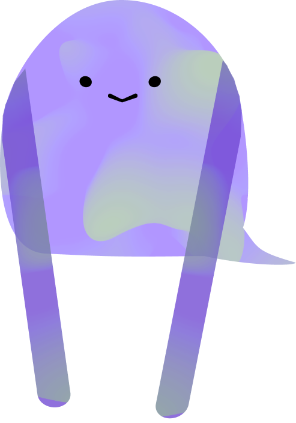
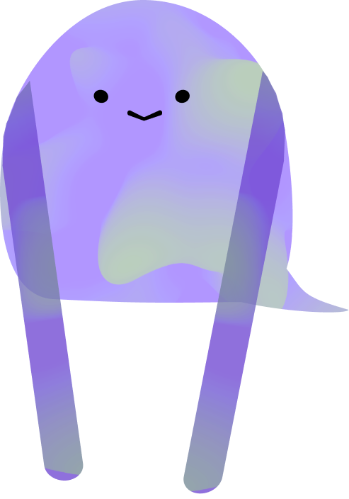

-
- float technique-gsap from to chat
- scrollTrigger
- trigger = chapitre 1
- deplacement x & y du chat
Le chaton, perdu dans l'espace,tout à coup découvre une planète aquatique


- float technique-gsap from to chat
- ...
- scrollTrigger
- trigger= chapitre 2
- opacity chat 0 a 1
- trigger= texte chapitre 2
- opacity 0 a 1

Il commence à tomber et tomber jusqu'à
- float technique-gsap from to chat
- float technique-gsap from to bulle
- scrollTrigger
- trigger = chapitre 3
- chat de 0px a 900px
- animation gsap SVG ligne


ce qu'il découvre un univers aussi bleu que le ciel dont il est tombé de
- float technique-gsap from to chat
- float technique-gsap from to bulle
- float technique-gsap from to poissons
- scrollTrigger
- trigger= chapitre 4
- deplacement du chat et poissons


mauve, vert, orange, les couleurs defilent devant lui comme un arc-en-ciel
- float technique-gsap from to chat
- float technique-gsap from to bulle
- float technique-gsap from to poisson
- float technique-gsap from to raie
- scrollTrigger
- trigger= chapitre 5
- deplacement chat
- deplacement raie


il rencontre des animaux de tout les tailles
- float technique-gsap from to chat
- float technique-gsap from to bulle
- float technique-gsap from to personnage mauve
- scrollTrigger
- trigger= chapitre 6
- deplacement chat
- deplacement personnage mauve


un être, différent des espèces qu'il a vue, lui apparait avec un message: il est temps de retourner chez toi
- float technique-gsap from to chat
- float technique-gsap from to bulle
- GSAP SVG motion path personnage mauve
- scrollTrigger
- trigger= chapitre 7
- chat opacity 0 a 1
- texte opacity 0 a 1
 


l'être mauve comme le reflet des coraux le propulse vers l'espace!
- gsap
- float technique-gsap from to chat
- Animation Morph étoile 0-5
- scrollTrigger
- trigger= chapitre 7
- chat opacity 0 a 1
- texte opacity 0 a 1
- perso mauve long bras opacity 0 a 1
- perso mauve bars cours opacity 1 a 0